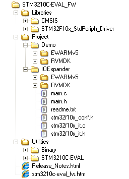

Package description
The
STM3210C-EVAL Demonstration Firmware is supplied in one single zip file.
The extraction of the zip file generates one folder, STM3210C-EVAL_FW_V1.0.0, which
contains the following subfolders:

Libraries folder:
contains STM32F10x Standard Peripheral's drivers (used for IOExpander
example)
Project
folder
Demo subfolder:
contains binary image of the demonstration, plus preconfigured projects for
EWARM and RVMDK toolchains that can be used to program the binary image in
the internal Flash memory.
IOExpander
subfolder: contains example projects for EWARM and RVMDK
toolchains that demonstrate how to configure and use the IO Expander
and related modules (Joystick, Touch Screen for LCD...) mounted
on STM3210C-EVAL
Utilities folder
Binary subfolder:
contains binary images of the demonstration to be used with EWARM
and RVMDK (provided as backup)
STM32_EVAL subfolder:
contains the LCD, IO Expander and other STM3210C-EVAL board related drivers.
What do I need to
start successfully?
Evaluation Board: STMicroelectronics STM3210C-EVAL (STM32F10x Connectivity line) evaluation
board.
Tool chain:
Use your
preferred toolchain. RVMDK (KEIL) or EWARMv5 (IAR).
How to proceed?
To
program the demonstration binary image in the internal Flash memory,
you have to proceed as follows
EWARMv5
– Open the
Flash_Loader.eww project.
– Load project image: Project->Download and Debug (CTRL+ D)
– Restart the EVAL board (Press B1: reset button).
RVMDK
- Open the
Flash_Loader.uv2 project
– Load project image: Debug->Start/Stop Debug Session
– Restart the EVAL board (Press B1: reset button).
|
For complete documentation on STM32(CORTEX M3)
32-bit Microcontrollers platform visit www.st.com/STM32
|
|